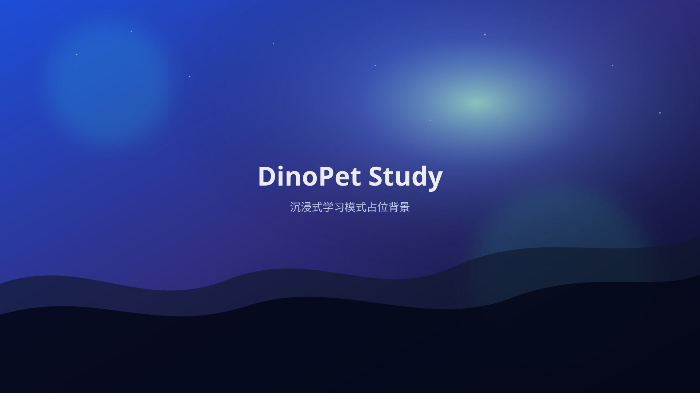

背景
设置
退出
背景设置
照片模式
视频模式
选择文件
移除背景
支持本地图片或视频。切换/移除时会释放临时资源。
任务清单
添加
ZCode 对话
发送
番茄钟
25:00
专注中
开始
暂停
重置
专注时长
分钟
休息时长
分钟
已完成 0 个番茄
API 设置
API 地址
API 密钥
模型
提示：API 密钥会明文保存在本机 localStorage，请勿在公共电脑使用。
保存
清除密钥
关闭
计时
任务
对话
背景